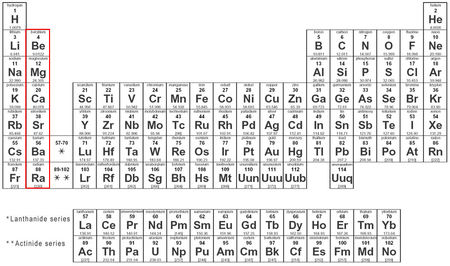

A série química dos metais alcalino-terrosos são os elementos químicos da família 2A da tabela periódica, sendo formada pelos seguintes elementos: Berílio (Be), Magnésio (Mg), Cálcio (Ca), Estrôncio (Sr), Bário (Ba) e Rádio (Ra).
O nome alcalino-terroso vem do nome que recebiam seus óxidos: terras. Segundo o dicionário Houaiss, alcalino tem a ver com álcalis e suas propriedades básicas, e terroso vem do latim "que contém terra". Ao longo da história da alquimia e da química, terra ou terroso era qualidade de substâncias pouco solúveis em água. Logo, o nome faz referência aos seus óxidos pouco solúveis que contêm nos metais alcalino terrosos. Podem sim conter terra, sem serem extraidos diretamente do solo.
